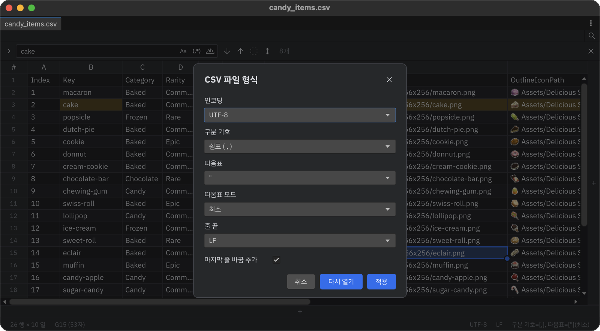

파일 형식
상태 표시줄 오른쪽의 인코딩·줄 끝·구분 기호 중 하나를 누르면 CSV 파일 형식(TSV면 TSV 파일 형식) 대화상자가 열립니다.

| 항목 | 선택지 |
|---|---|
| 인코딩 | UTF-8, UTF-8 with BOM, UTF-16 LE/BE, 한국어(CP949·EUC-KR), 일본어(Shift_JIS·EUC-JP), 중국어(GBK·GB18030·Big5), Windows 1252 등 |
| 구분 기호 | 쉼표, 탭, 세미콜론, 콜론, 파이프, 공백, 기타(한 글자 직접 입력) |
| 따옴표 | 없음, ", ', 기타(한 글자 직접 입력) |
| 따옴표 모드 | 항상, 최소(구분 기호·따옴표·줄바꿈이 든 셀만), 사용 안 함 |
| 줄 끝 | LF, CRLF |
| 마지막 줄 바꿈 추가 | 파일 끝에 줄바꿈을 붙일지 |
다시 열기와 적용
- 다시 열기: 고른 형식으로 파일을 디스크에서 다시 읽습니다. 저장하지 않은 편집은 버려집니다. 예를 들어 글자가 깨져 보이는 CP949 파일은 인코딩을 한국어 (CP949) 형식으로 바꾸고 다시 열면 됩니다.
- 적용: 셀 값은 그대로 두고 저장할 형식만 바꿉니다. 저장해야 파일에 반영되며 Undo로 되돌릴 수 있습니다.
.meta에 기록되는 내용
BOM이나 확장자로 알아낼 수 없는 부분(레거시 인코딩, 기본값이 아닌 구분 기호·따옴표·따옴표 모드)은 파일의 .meta(userData)에 기록됩니다. 다음에 열 때도, 버전 관리로 받은 팀원도 같은 형식으로 읽습니다. 모두 기본값이면 .meta는 바뀌지 않습니다.
Note
다른 도구가 이미 그 파일의 userData를 쓰고 있으면 덮어쓰지 않고 Console에 경고를 남깁니다.